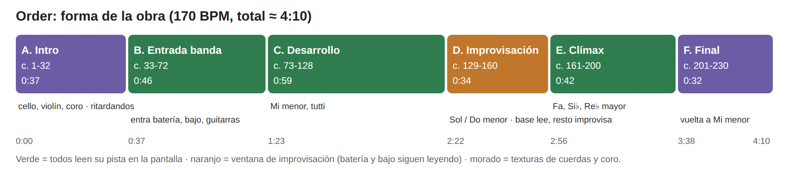
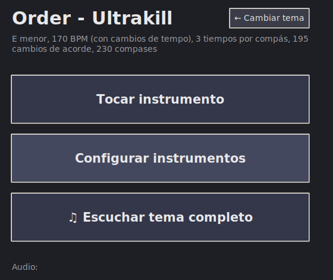
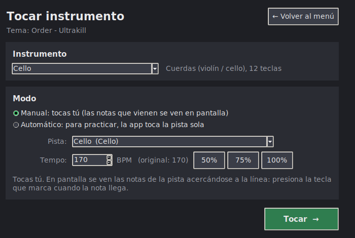
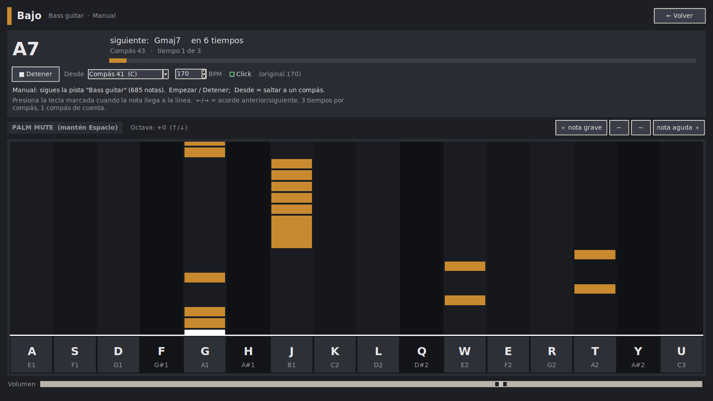
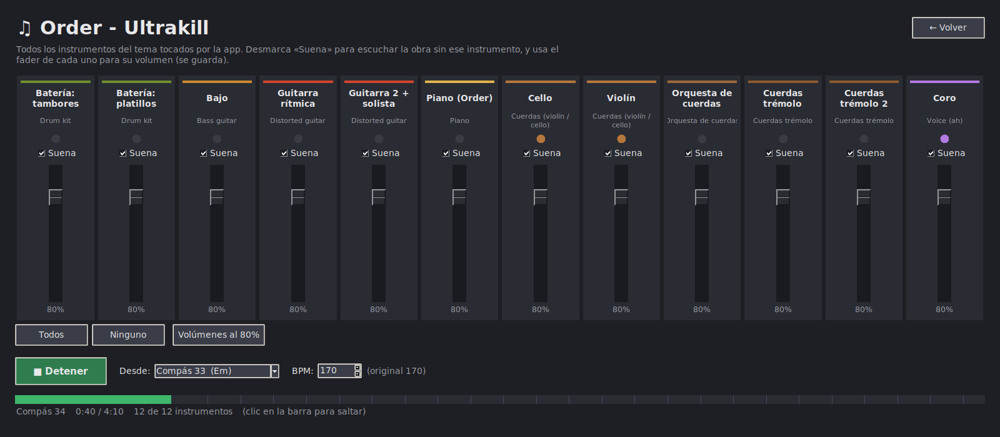
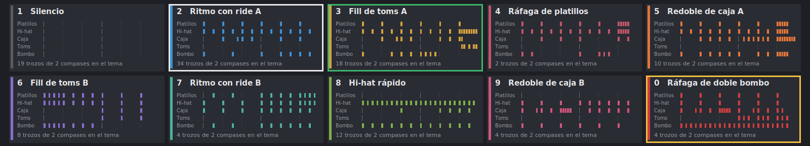

T1 · ORDER
Propuesta de obra para Orquesta de Laptops UC · tema Order de Heaven Pierce Her
Propuesta
Cada intérprete toca una parte del tema (batería, bajo, guitarras, sintes…) con el teclado del computador, leyendo las notas que caen en pantalla. Referentes: CliX (Ge Wang) y Freesia.
Propuesta (PDF)
Tocar: app Keyboard Instruments
Programa listo (sin instalar Python), siempre la última versión de mi repositorio (necesita internet):
Windows macOS LinuxCopia del código en este repo (funciona sin internet desde la copia de cada laptop):
keyboard-instruments.zip- Windows: descomprimir y doble clic en
run_windows.bat(Python 3.12 de python.org). - Linux:
sudo apt install python3-venv python3-tk libportaudio2y./run_linux.sh. - macOS: doble clic en
run_macos.command. - A mano:
pip install -r requirements.txtypython app.py.
Código y todas las versiones: github.com/Ikilly0/ORQUESTRA-DE-LAPTOS.
Para traer la última versión del código a esta carpeta: python app/actualizar.py.




Percusión por patrones
La batería de Order descompuesta en 10 trozos estándar (ritmos, fills de toms, redobles, ráfagas…). Quien toca percusión le da play y elige con las teclas 1–0 qué patrón suena en el siguiente compás.
